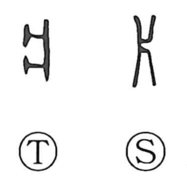

片

Kun: kata | On: hen
one side ・ piece ・ fragment ・ thin sheet
Explanation
This character is a pictograph of a single support plank used in the tamped‑earth construction method called hanchiku, where boards stood upright on the left and right and earth was rammed between them to form walls. 片 depicts one of those paired boards, so it naturally came to mean “one side.” From the idea of just one of a pair, it extends to senses such as a lone piece or fragment, and by association to something thin and small—a piece of wood or cloth, or a flat sheet or leaf—and even to the nuance of something slight or few in amount.